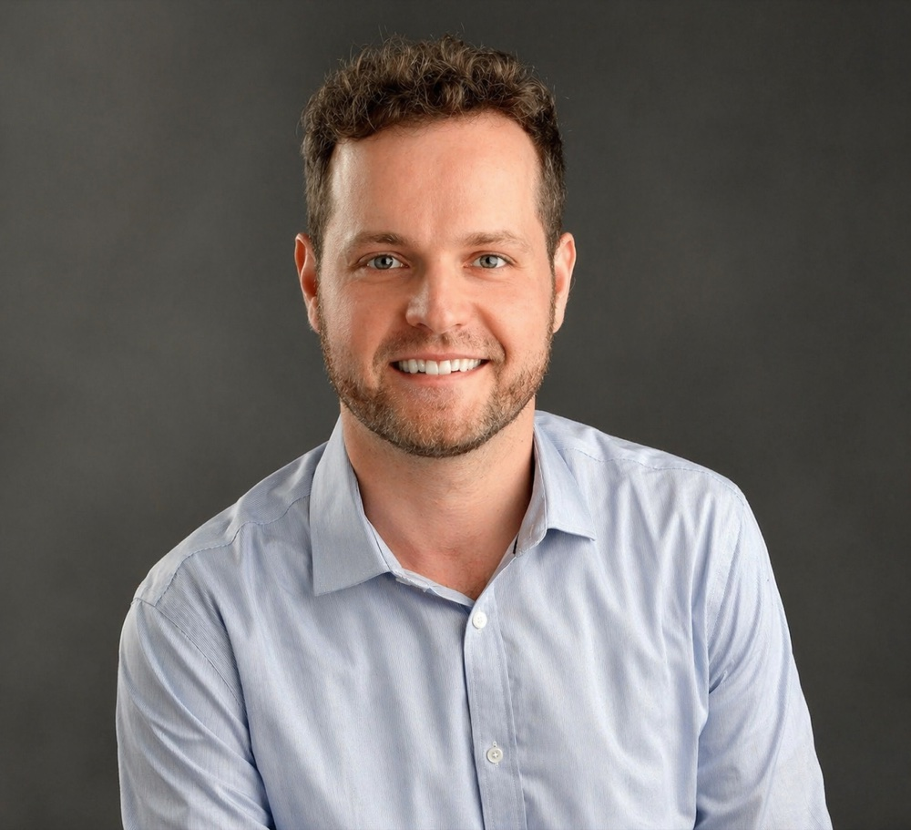
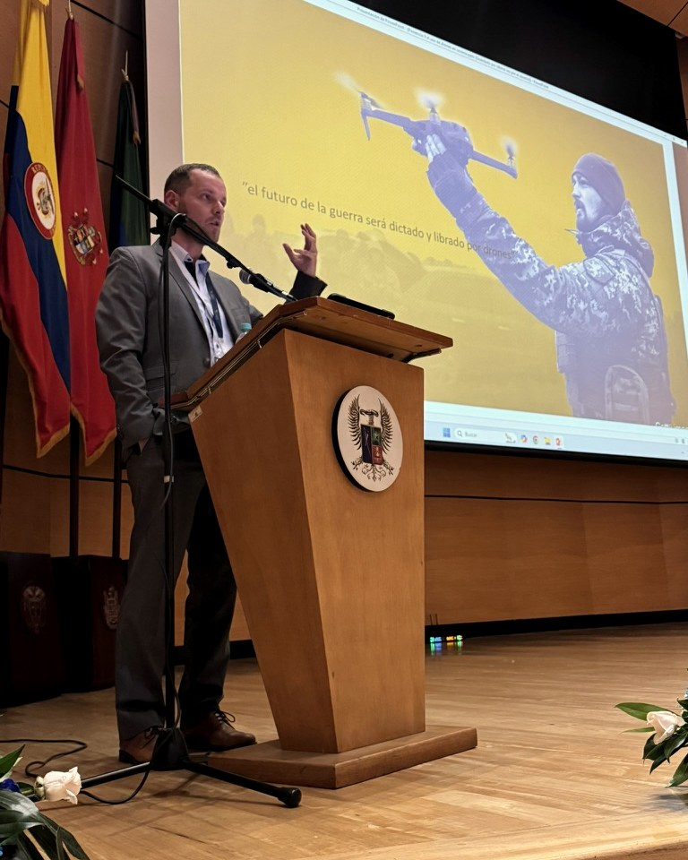

About
Dr. Dorian Kantor
Founder of Kantor Communication. Political analyst, consultant, university professor, and international speaker.
Dr. Dorian Kantor founded Kantor Communication to bring together two things his own work has always required: command of a language and the ability to make an argument land in it.
With 20 years of teaching and 15 years of professional experience, he works across English, German, Spanish, and Hungarian. Based in Valencia, he works with individuals, businesses, and institutions across Europe and internationally.
Analysis and advisory work
Dr. Kantor is the founder of Kantor Consulting, a political analysis firm, and a founding partner of Talveris Security and Defense. His advisory work includes engagements with the US and Colombian Armed Forces, ambassadors and judges in Colombia, European political foundations, and defense firms.
He has represented governmental and nongovernmental clients in diplomatic roles, worked on political campaigns, and advocated on behalf of clients in legal matters. His negotiation experience includes university internationalization efforts, curriculum redesign, public and private project development, and legislative advocacy.
He has co-authored commissioned research for US Southern Command on drones and emerging technologies in Latin America. His research and advisory work focus on international law, US foreign policy toward Latin America and Europe, and defense technology.
Teaching and academic appointments
Dr. Kantor’s academic career spans university appointments and teaching engagements across the United States, Europe, and Latin America. He served as Lecturer in Politics at Freie Universität Berlin in 2013 and 2026, and as Assistant Professor of International Relations at Pontificia Universidad Javeriana in Bogotá from 2020 to 2025. He was also associate faculty at George Mason University from 2014 to 2020 and taught at Eötvös Loránd University in Budapest from 2007 to 2008. As an Erasmus+ grant recipient, he taught at the University of Hradec Králové in the Czech Republic in 2022. From 2015 to 2018, he taught at Education First in Washington, DC, where he was responsible for developing the institution’s internship program.
His academic engagement includes guest lectures at the Heidelberg Center for American Studies in Germany, the Universidade de São Paulo in Brazil, and FLACSO Ecuador, as well as participation in academic conferences across Europe, Latin America, and the United States. He has contributed to academic and professional activities at the Escuela de Inteligencia y Contrainteligencia and the Escuela Superior de Guerra of the Colombian Armed Forces. He has also supervised close to 30 undergraduate and graduate theses in international relations, political science, and international law.
The Kantor Method
Drawing on two decades of teaching experience across university education, private instruction, and professional language training, Dr. Kantor developed the Kantor Method: a structured five-step approach to language learning designed around the communication demands of professional life. The method informs every language program at Kantor Communication.
See the method →Writing and speaking
Dr. Kantor is a regular contributor to El Espectador, one of Colombia’s leading newspapers. His writing in English, Spanish, and German has also appeared in prominent publications including Revista Credencial, Spotlight Magazine, Pax Lumina, and IPG Journal. His research and policy analysis have been published by the Konrad Adenauer Stiftung, the Friedrich-Ebert-Stiftung, and Florida International University’s Jack D. Gordon Institute.
Since 2020, he has been quoted or interviewed 68 times by media outlets including S&P Global, El Tiempo, elDiario.es, Deutsche Welle, and Noticias Caracol. Since 2007, he has delivered 31 talks, panels, and lectures across the Americas and Europe.
Marketing and brand work
Dr. Kantor began his career in experiential marketing in the United States, representing major companies and managing large-scale projects. His professional experience spans work with organizations across the private, public, and academic sectors, including those featured on the Kantor Communication Brand & Marketing page.
At Kantor Communication, he personally leads every brand project, shaping its positioning, core message, and communication across languages and markets. A team of specialists in branding, communication, and visual identity develops the websites and materials around the agreed strategy.
Across countries
Having lived and worked in six countries and across four languages, Dr. Dorian Kantor brings first-hand understanding of the professional and cultural adjustments involved in working across borders. His experience across Europe and the Americas informs his approach to communication, helping clients navigate differences in language, expectations, and professional culture.


What this means for clients
One background, four kinds of client
Dr. Kantor combines direct client work with the leadership and oversight of Kantor Communication’s specialist team. He undertakes selected consulting and communication engagements personally and supervises all trainers delivering the company’s language programs. Across its three practice areas, Kantor Communication draws on his analytical, academic, and international experience, bringing in specialist expertise where a project requires it.
Writing, talks, and media
Selected work
Selected writing
- El legado del 11-S: veinticinco años de expansión del poder presidencialEl Espectador · September 2026 · Spanish
- Probado en combate: por qué Israel vuelve a ser socio de ColombiaEl Espectador · September 2026 · Spanish
- La política hacia Latinoamérica de la administración Biden: promesa y desempeñoBook chapter · Reconfiguración del orden mundial · Konrad Adenauer Stiftung · 2024 · Spanish
- The Concerning Trend of US Backsliding Aggravates Global Democratic DeclinePax Lumina · March 2024 · English
- Produkt der PolarisierungIPG Journal · December 2020 · German
Recent talks
- Borderland Security ConferencePanelist · FIU and UTEP · El Paso, Texas · 2025
- V Congreso Internacional de Inteligencia EstratégicaSpeaker · Bogotá · 2024
- What the 2024 US elections mean for Latin AmericaPanelist · FLACSO Ecuador · Quito · 2024
In the media
Quoted and interviewed by S&P Global, El Espectador, El Tiempo, Cambio, La República, La Silla Vacía, elDiario.es, Deutsche Welle, and Noticias Caracol, among others.
All 68 media quotes and interviews since 2020 →
Work with Dr. Kantor
Tell us what you need to say, and to whom
Every engagement starts with a short conversation about your situation, your audience, and your language.